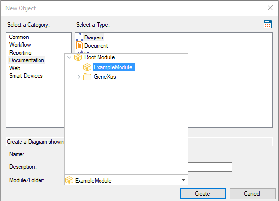

There are many ways to add GeneXus objects to a Module object. Below is a list of the most common and easiest ways to do so. To see a list of which objects can belong to a Module object, read the article Which objects can be defined in a module?. New ObjectA new Object can be added to a Module Object by editing the Module/Folder option in the GeneXus Objects (X Evolution 3) dialog. By default, this property will have its value set to the Root module, but if the dialog is opened and a different Module Object is selected in the KB Explorer, the property will be automatically set to the selected Module Object. The Module/Folder option is shown in the following image:  Existing objectAn existing object can be added/moved to a Module by:
Note: Once an object is moved to or created in a Module, it will be part of its Interface if the Object Visibility property is set to Public. See AlsoHowTo: Creating a Module Object
|
| Backlinks | ||
| HowTo: Creating a Module Object | HowTo: Merging two or more Knowledge Bases into one using Modules | Toc:Modules |
| Modules Distribution in GeneXus |